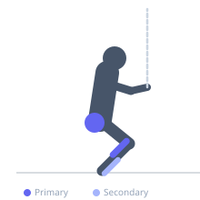
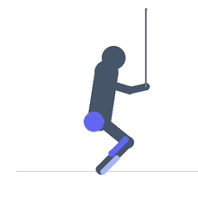

Exercise guide / Monster Walks on Forefeet
Monster Walks on Forefeet
A monster walk variation performed on the balls of the feet (tiptoe position) while maintaining a mini band resistance above the knees. Rising onto the forefeet during the lateral walk adds a continuous calf and ankle stability demand to the standard gluteus medius activation of monster walks, creating a combined lower limb rehabilitation stimulus. This variation is used in advanced ankle rehabilitation, calf strengthening, and hip-ankle integration programs.
Primary muscles
gluteus medius
gastrocnemius medial
Secondary muscles
gluteus maximus
soleus
tibialis anterior
Stabilizers
transverse abdominis
Equipment
Resistance Band (Loop / Mini Band)


Starting position
- Place a mini band loop above the knees. Rise onto the balls of both feet. Assume a quarter-squat position with hips pushed back slightly, feet hip-width apart.
Setup
- Ensure adequate space for 10-12 lateral steps in each direction. Begin with a lighter band to master the balance before adding resistance.
Steps
- Step 1: Rise onto the forefeet with the band above the knees and maintain this elevated position throughout.
- Step 2: Take a lateral step to the right, keeping the toes forward and the band taut.
- Step 3: Bring the left foot partially in (maintaining some width) to keep band tension.
- Step 4: Continue walking laterally for the prescribed steps, then reverse direction. The forefeet stay elevated throughout.
Coaching cues
- Heels never touch the floor — stay on the balls of the feet the whole time
- Keep toes pointing forward — not outward
- Feel both the outer hip and the calf working simultaneously
Breathing
- Breathe continuously. The sustained tiptoe position is demanding — do not hold the breath.
Range of motion
- Lateral step width should maintain band tension without forcing knee valgus. Stay on the forefeet throughout.
Tempo
- 1 step per 1-1.5 seconds. Controlled — not rushing.
Common mistakes
- Lowering the heels during the walk — the forefoot elevation must be sustained throughout
- Letting the feet drift parallel or together, losing band tension
- Excessive forward lean — maintain an upright torso
Safety
- If ankle stability is compromised, begin with standard monster walks before this elevated variation
- Perform near a wall for safety during initial attempts
Training
- endurance: 10–20 reps
- endurance: 2–3 sets
- Rest: {'endurance': 60}